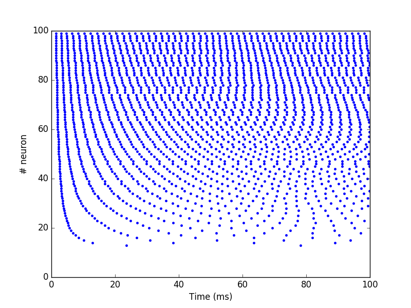
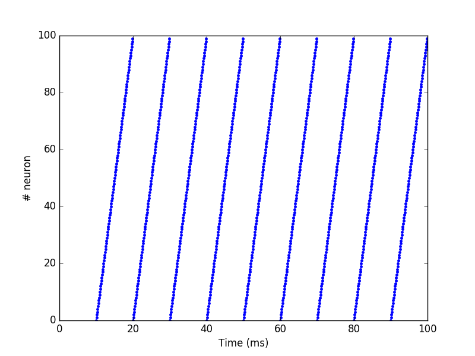
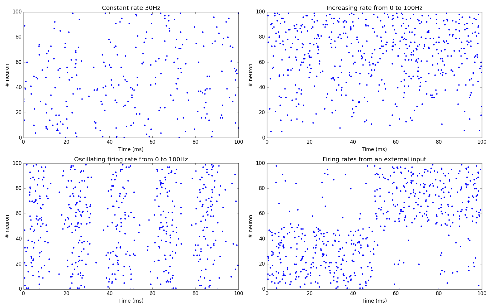
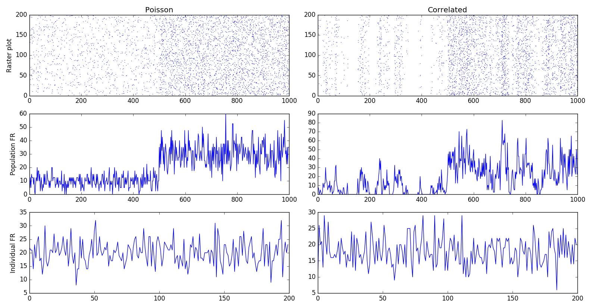

Setting inputs#
The methods to set inputs to a network depends on whether it is rate-coded or spiking. Specific populations to set inputs are described in the API.
Inputs to a rate-coded network#
Standard method#
The simplest way to define an input population is to use a dummy neuron
which simply holds a firing rate r as parameter, and connect it to
another population:
input_pop = Population(10, Neuron(parameters="r=0.0"))
pop = Population (10, LeakyIntegrator)
proj = Projection(input_pop, pop, 'exc')
proj.connect_one_to_one(1.0)
compile()
simulate(100.)
input_pop.r = 1.0
simulate(100.)
The only thing you need to do is to manipulate the numpy array r
holded by input_pop, and it will influence the \"real\" population
pop
It is important to define r as a parameter of the neuron, not
a variable in equations. A variable sees its value updated at each
step, so the value you set would be immediately forgotten.
Note
Using this method necessitates to interact with the input population in the Python script everytime you want to change the inputs. If the inputs change every time step, your simulation will alternate between Python and C++ executions and potentially become very slow.
Timed Arrays#
If the inputs change frequently, it may be more efficient to store all
these values in a TimedArray (doc in the API).
Let's suppose you have a population of 10 neurons which should be activated sequentially over time. You can store the inputs to these neurons in a Numpy array, where the first axis corresponds to time and the second (or more) to the geometry of the population:
inputs = np.array(
[
[1, 0, 0, 0, 0, 0, 0, 0, 0, 0],
[0, 1, 0, 0, 0, 0, 0, 0, 0, 0],
[0, 0, 1, 0, 0, 0, 0, 0, 0, 0],
[0, 0, 0, 1, 0, 0, 0, 0, 0, 0],
[0, 0, 0, 0, 1, 0, 0, 0, 0, 0],
[0, 0, 0, 0, 0, 1, 0, 0, 0, 0],
[0, 0, 0, 0, 0, 0, 1, 0, 0, 0],
[0, 0, 0, 0, 0, 0, 0, 1, 0, 0],
[0, 0, 0, 0, 0, 0, 0, 0, 1, 0],
[0, 0, 0, 0, 0, 0, 0, 0, 0, 1]
]
)
inp = TimedArray(rates=inputs)
pop = Population(10, Neuron(equations="r=sum(exc)"))
proj = Projection(inp, pop, 'exc')
proj.connect_one_to_one(1.0)
compile()
simulate(10.)
With this code, each neuron will be activated in sequence at each time
step (dt=1.0 by default). If you simulate longer than 10 ms, the last
input [0, 0, .., 1] will be kept forever.
If the rates array has two dimensions, the corresponding population
will be 1D. You can pass a multidimensional array to obtain a 2D or 3D
population.
Presenting a input for only one time step is very short, especially if
the population pop uses ODEs to integrate the inputs. You can provide
a schedule parameter to the TimedArray to define how long (in ms) an
input should be presented:
inp = TimedArray(rates=inputs, schedule=10.)
Here each input will be kept constant for 10 ms, so the 10 inputs will need 100 ms of simulation to be presented. If you do not want a regular schedule, you can also provide a list of times where inputs should be set:
inp = TimedArray(rates=inputs,
schedule=[0., 10., 30., 60., 100., 150., 210., 280., 360., 450.])
The length of the schedule list should be equal or smaller to the
number of inputs defined in rates. If this length is smaller (e.g. 7),
only the 7 first inputs will be used as inputs. If the length is bigger,
it will lead to an error.
A TimedArray can be reset to iterate again over the inputs:
inp = TimedArray(rates=inputs, schedule=10.)
...
compile()
simulate(100.) # The ten inputs are shown with a schedule of 10 ms
inp.reset()
simulate(100.) # The same ten inputs are presented again.
The times declared in schedule are therefore relative to the last call
to reset() (or to t=0.0 at the beginning).
If you want to systematically iterate over the inputs without iterating
over simulate() and reset(), you can provide the period argument
to the TimedArray to define how often the inputs will be reset:
inp = TimedArray(rates=inputs, schedule=10.. period=100.)
...
simulate(100000.)
If the period is smaller than the total durations of the inputs, the last inputs will be skipped.
The rates, schedule and period can be modified after compilation.
The only constraint is that the size of the population (defined in the
rates array) must stay the same.
Images and Videos#
Images
A simple utility to directly load an image into the firing rates r of
a Population is provided by the ImagePopulation class. This class is
not automatically imported with ANNarchy, you need to explicitly import
it:
from ANNarchy import *
from ANNarchy.extensions.image import ImagePopulation
inp = ImagePopulation(geometry=(480, 640))
inp.set_image('image.jpg')
Using this class requires that you have the Python Image Library
installed (pip install Pillow). Any image with a format supported by
Pillow can be loaded, see the
documentation.
The ImagePopulation must be initialized with a geometry corresponding
to the desired size of the population. If it differs from the resolution
of the image (set with set_image), the image will be first resized to
match the geometry of the population.
Note
The size of an image is defined as (height, width), so a 640x480 image should be loaded in a (480, 640 population).
If the geometry has only two dimensions (480, 640), each neuron will represent the luminance (or brightness) of the corresponding pixel.
If the geometry has three dimensions (480, 640, 3), the color channels will additionally be represented (RGB). Any other value than 3 for the third dimension will generate an error.
Note
The firing rate r of a neuron is 1.0 when the corresponding pixel is
white (value 255 as an unsigned integer on 8 bits).
Note that the following code is functionally equivalent:
from ANNarchy import *
from PIL import Image
inp = Population(geometry=(480, 640), Neuron(parameters="r=0.0"))
img = Image.open('image.jpg')
img = img.convert('L')
img = img.resize((480, 640)) /255.
inp.r = np.array(img)
An example is provided in examples/image/Image.py.
Videos
The VideoPopulation class allows to retrieve images from a Webcam,
using the OpenCV computer vision library, version
4.0 or later. pkg-config opencv4 --cflags --libs should not return an
error. vtk might have to be additionally installed.
from ANNarchy import *
from ANNarchy.extensions.image import VideoPopulation
inp = VideoPopulation(geometry=(480, 640))
compile()
inp.start_camera(0)
while(True):
inp.grab_image()
simulate(10.0)
A geometry must be provided as for ImagePopulations. The camera must
be explicitly started after compile() with inp.start_camera(0). 0
corresponds to the index of your camera, change it if you have multiple
cameras.
The VideoPopulation can then acquire frames from the camera with
inp.grab_image() and store the correponding image in its firing rate
r (also scaled between 0.0 and 1.0). An example is provided in
examples/image/Webcam.py.
Warning
VideoPopulation is not available with the CUDA backend.
Inputs to a spiking network#
Standard method#
To control the spiking patterns of a spiking population, the simplest
way is to inject current into the corresponding membrane potentials.
The built-in neuron types defined by ANNarchy have a i_offset variable
that can be used for this purpose:
from ANNarchy import *
setup(dt=0.1)
pop = Population(100, Izhikevich)
pop.i_offset= np.linspace(0.0, 30.0, 100)
m = Monitor(pop, 'spike')
compile()
simulate(100.)
data = m.get('spike')
t, n = m.raster_plot(data)
import matplotlib.pyplot as plt
plt.plot(t, n, '.')
plt.ylim(0, 100)
plt.xlabel('Time (ms)')
plt.ylabel('# neuron')
plt.show()

Current injection#
If you want the injected current to be time-varying, you can design a
rate-coded population of the same size as the spiking population and
create a CurrentInjection projection between them:
inp = Population(100, Neuron(equations="r = sin(t)"))
pop = Population(100, Izhikevich)
proj = CurrentInjection(inp, pop, 'exc')
proj.connect_current()
The current g_exc of a neuron in pop will be set at each time step
to the firing rate r of the corresponding neuron in inp (i.e. with
the same rank). inp can also be defined as a TimedArray.
The connector method should be connect_current(), which accepts no
weight value and no delay.
SpikeSourceArray#
If you want to control precisely the spiking patterns used as inputs,
you can provide a list of spike times to a SpikeSourceArray object:
from ANNarchy import *
setup(dt=0.1)
spike_times = [
[ 10 + i/10,
20 + i/10,
30 + i/10,
40 + i/10,
50 + i/10,
60 + i/10,
70 + i/10,
80 + i/10,
90 + i/10] for i in range(100)
]
pop = SpikeSourceArray(spike_times=spike_times)
m = Monitor(pop, 'spike')
compile()
simulate(100.)
data = m.get('spike')
t, n = m.raster_plot(data)
import matplotlib.pyplot as plt
plt.plot(t, n, '.')
plt.ylim(0, 100)
plt.xlabel('Time (ms)')
plt.ylabel('# neuron')
plt.show()

The spike_times argument must be a list of lists containing the spike
times in ms. Its length defines the number of neurons in the population.
It is not possible to define a geometry. If one neuron should not spike
at all, just provide an empty list. The different neurons can have a
different number of spikes.
If you want to repeat the same stimulation, you can reset the SpikeSourceArray, what will set its internal time back to 0.0:
simulate(100.)
pop.reset()
simulate(100.)
The spikes times can be changed after compilation, bit it must have the same number of neurons:
pop.spike_times = new_spike_times_array
An example is provided in examples/pyNN/IF_curr_alpha.py.
Warning
SpikeSourceArray is not available with the CUDA backend.
Poisson population#
The PoissonPopulation class allows to create a population of identical
spiking neurons, whose spiking patterns vary according to a Poisson
distribution:
from ANNarchy import *
setup(dt=0.1)
pop = PoissonPopulation(100, rates=30.)
m = Monitor(pop, 'spike')
compile()
simulate(100.)
data = m.get('spike')
t, n = m.raster_plot(data)
import matplotlib.pyplot as plt
plt.plot(t, n, '.')
plt.ylim(0, 100)
plt.xlabel('Time (ms)')
plt.ylabel('# neuron')
plt.show()
In this example, each of the 100 neurons fires randomly, with a mean firing rate of 30 Hz (next figure, top-left).
It is also possible to specify the mean firing rate individually for each neuron (next figure, top-right):
pop = PoissonPopulation(100, rates=np.linspace(0.0, 100.0, 100))
The rates attribute can be modified at any time during the simulation,
as long as it has the same size as the population.
Another possibility is to define a rule for the evolution of the mean firing rate in the population (next figure, bottom-left):
pop = PoissonPopulation(
geometry=100,
parameters = """
amp = 100.0
frequency = 50.0
""",
rates="amp * (1.0 + sin(2*pi*frequency*t/1000.0) )/2.0"
)
The rule can only depend on the time t: the corresponding mean firing
rate is the same for all neurons in the population.
Finally, the rates argument can be replaced by a target, so it can be
computed by another rate-coded population (next figure, bottom-right):
rates = 10.*np.ones((2, 100))
rates[0, :50] = 100.
rates[1, 50:] = 100.
inp = TimedArray(rates = rates, schedule=50.)
pop = PoissonPopulation(100, target="exc")
proj = Projection(inp, pop, 'exc')
proj.connect_one_to_one(1.0)
In the code above, we define a TimedArray for 100 neurons, so that
half of the neurons fire at 100 Hz, while the others fire at 10 Hz.
Every 50 ms, the two halves are swapped.
We just need to create a projection with the target \"exc\" between the TimedArray and the PoissonPopulation (with a one-to-one pattern and weights 1.0 to preserve scaling), and the Poisson population will reflect the firing rates defined by the TimedArray.

Homogeneous correlated inputs#
HomogeneousCorrelatedSpikeTrains defines spiking neurons following a
homogeneous distribution with correlated spike trains.
The method describing the generation of homogeneous correlated spike trains is described in:
Brette, R. (2009). Generation of correlated spike trains. http://audition.ens.fr/brette/papers/Brette2008NC.html
The implementation is based on the one provided by Brian.
To generate correlated spike trains, the population rate of the group of Poisson-like spiking neurons varies following a stochastic differential equation:
where \(\xi\) is a random variable. Basically, \(x\) will randomly vary around $\mu§ over time, with an amplitude determined by \(\sigma\) and a speed determined by \(\tau\).
This doubly stochastic process is called a Cox process or Ornstein-Uhlenbeck process.
To avoid that x becomes negative, the values of mu and sigma are computed from a rectified Gaussian distribution, parameterized by the desired population rate rates, the desired correlation strength corr and the time constant tau. See Brette's paper for details.
In short, you should only define the parameters rates, corr and
tau, and let the class compute mu and sigma for you. Changing rates,
corr or tau after initialization automatically recomputes mu and
sigma.
Example:
from ANNarchy import *
setup(dt=0.1)
pop_poisson = PoissonPopulation(200, rates=10.)
pop_corr = HomogeneousCorrelatedSpikeTrains(200, rates=10., corr=0.3, tau=10.)
compile()
simulate(1000.)
pop_poisson.rates=30.
pop_corr.rates=30.
simulate(1000.)
